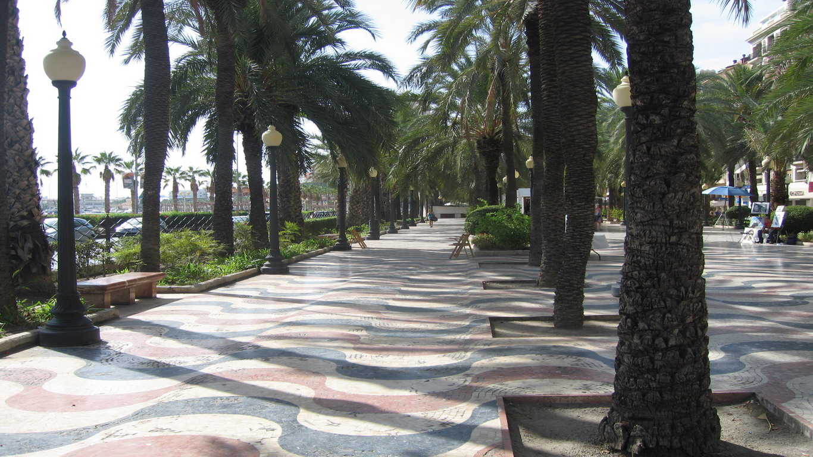
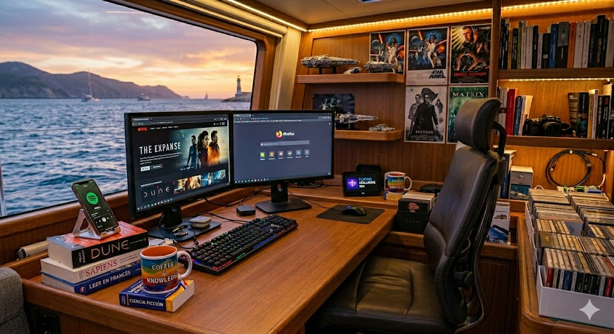
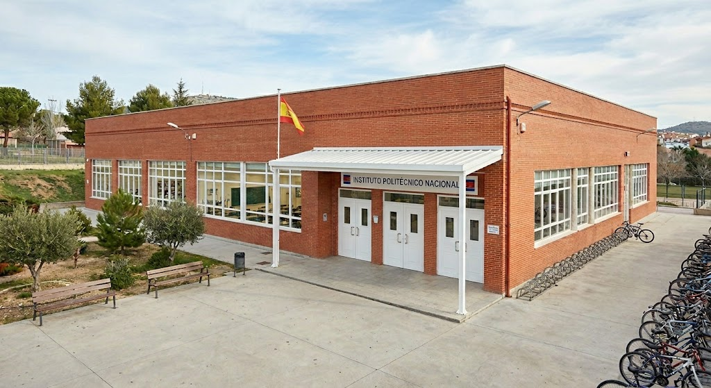

Carlos Javier Pérez Pérez
Nacionalidad: española
Lugar de nacimiento: Alicante

Explanada de Alicante
Mis pasatiempos son
Navegar por internet, lectura, dibujo digital, escuchar música, informática, idiomas, ver la televisión, documentales, películas o series de ciencia ficción, aventuras, etc.

Sobre mis estudios
Estudié F.P. II Administrativo en el Instituto Politécnico Nacional de Alicante.
El Instituto Politécnico Nacional de Alicante es la antigua denominación oficial del actual IES Antonio José Cavanilles. Se trata del centro educativo decano de la Formación Profesional en la ciudad de Alicante y uno de los institutos de secundaria más antiguos y emblemáticos de la provincia.
Evolución Histórica
El centro ha cambiado de nombre a lo largo del tiempo reflejando las reformas educativas de España:
• 1927: Se fundó originalmente bajo el nombre de Escuela del Trabajo.
• 1967: Se trasladó a sus instalaciones actuales adoptando el nombre de Instituto Politécnico de Alicante (posteriormente adscrito a la red estatal como Instituto Politécnico Nacional).
• Años 90: Con la implantación de la ley educativa LOGSE, el centro incorporó los estudios de ESO y Bachillerato, siendo rebautizado definitivamente como IES Antonio José Cavanilles.
Datos Clave del Centro: Se sitúa en la Avenida del Alcalde Lorenzo Carbonell, 32-34, en Alicante ciudad.
Comunidad educativa: Cuenta con una comunidad de aproximadamente 1.800 estudiantes matriculados y un equipo docente de unos 190 profesores.
Infraestructura: El edificio principal fue diseñado por el reconocido arquitecto Juan Antonio García Solera. Cuenta con amplios talleres específicos y laboratorios adaptados a las demandas técnicas modernas.
Oferta Formativa
Aunque imparte Educación Secundaria Obligatoria (ESO) y Bachillerato, su gran pilar sigue siendo la Formación Profesional (FP), destacando en las siguientes áreas de Grado Medio y Superior:
• Electricidad y Electrónica
• Fabricación Mecánica
• Informática y Comunicaciones
Modalidad Semipresencial: Es un centro pionero en esta metodología, impartiendo múltiples ciclos en este formato de alta demanda.
Proyectos e Internacionalización
El centro mantiene una fuerte proyección internacional a través de la participación activa en proyectos Erasmus+ de movilidad. Esto facilita que sus alumnos realicen prácticas laborales en empresas del extranjero, principalmente en países como Italia.

Mi historia
De la administración a la tecnología: mi trayectoria
• Técnico Especialista en Administración (F.P. II).
• Gestión documental y administrativa.
• Amplia trayectoria laboral como contable.
Pasión por la informática y soporte técnico
• Autodidacta desde la época del MS-DOS.
• Especialista en formateo de Windows 10/11.
• Creador de manuales prácticos de software.
Habilidades creativas y digitales
• Diseño gráfico y dibujo digital (Photoshop, etc).
• Edición y digitalización de audio.